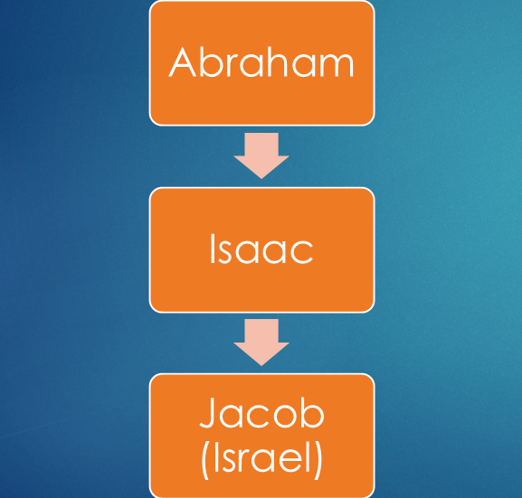

REL 210 World Religions · Lecture 1
Origins, Exodus,
Temple & Diaspora
Historical origins and development of Judaism
Three Historical Turning Points
I
A People before a State
How do creation, ancestry, and covenant establish identity?
II
Liberation, Kingdom & Exile
How do Exodus, Torah, monarchy, and catastrophe reshape the people?
III
Temple to Torah
How does Judaism survive conquest, diaspora, and the loss of the Temple?
Section I
Ancestral Memory & Covenant
How can a people possess an identity before possessing a state?
Names across Jewish History
Hebrews
A traditional name for the ancestors during the patriarchal and Exodus narratives.
Israelites
The people associated with Jacob/Israel, the tribes, judges, monarchy, and First Temple.
Jews
A name connected to Judah and increasingly used after the Babylonian exile.
Judaism
The evolving religious and communal tradition of the Jewish people.
Names change as political and communal identities change.
History, Memory & Sacred Story
Sacred Narrative
Genesis and Exodus interpret origins through relationship with God.
Historical Evidence
Texts, archaeology, inscriptions, and comparative study answer different questions.
Collective Memory
A story can shape identity and practice even when its details remain historically debated.
Historical and religious questions overlap—but they are not identical.
Creation: A World of Order & Responsibility
One Creator: the cosmos is not a battlefield among competing deities
Human dignity: humanity is created in the image of God
Moral agency: human beings receive freedom, limits, and responsibility
Sacred time: creation culminates in Sabbath rest
The Great Flood: Divine Judgment and Mercy
Humanity’s corruption leads to the decision for a great flood
Noah: Chosen for righteousness
The flood as a reset of creation, sparing Noah and his family
Promise of mercy: Covenant with Noah and the symbol of the rainbow
Genesis 17: 7
History of Judaism begins with Abram
God chose Abram (and his descendants) to establish His covenant
Literally, a contract. In the Bible, an agreement between God and his people; two-way promise

Covenant passed down from father to son
Patriarchal
Primogeniture
Jacob’s twelve sons establish the twelve tribes of Israel
Story of Joseph
Pause & Reflect
How do creation and covenant create a collective identity before Israel has a land, monarchy, or Temple?
Section II
Exodus, Monarchy & Exile
How does a liberation story become a nation—and survive political catastrophe?
The Exodus Narrative
Enslavement: Pharaoh subjects the Israelites to forced labor in Egypt
Calling: God commissions Moses to confront Pharaoh and lead the people out
Deliverance: plagues and escape through the Sea of Reeds / Red Sea break imperial control
Covenant: wilderness testing leads to Sinai, Torah, and a new communal identity
Why the Exodus Matters
Liberation
God is remembered as the one who hears the enslaved and defeats Pharaoh’s power.
Peoplehood
A collection of enslaved families becomes Israel, a covenant community.
Sinai & Torah
Freedom leads to obligation: liberated people receive a way of life.
Living Memory
Passover repeatedly places later generations inside the story of deliverance.
The Exodus turns memory of oppression into a covenantal ethic.
From Tribes to Monarchy & Temple
Settlement: biblical tradition describes tribes in Canaan led by judges
Monarchy: Saul, David, and Solomon centralize political authority
Jerusalem: David establishes a capital linking dynasty, city, and worship
First Temple: Solomon’s Temple becomes the central sanctuary
One Monarchy Becomes Two Kingdoms
After Solomon: political unity fractures in the tenth century BCE
Israel: the larger northern kingdom, with changing capitals and dynasties
Judah: the southern kingdom centered on Jerusalem and the Davidic dynasty
Prophets: criticize idolatry, injustice, and failures of covenant
Assyria Conquers the Northern Kingdom
722/721 BCE: Assyria captures Samaria and ends the kingdom of Israel
Imperial policy: deportation and resettlement weaken organized resistance
Lost Tribes: northern tribal identities fade, though not every inhabitant disappears
Judah survives: the southern kingdom remains, often under imperial pressure
Babylonian Exile: Catastrophe Reinterpreted
586 BCE: Babylon captures Jerusalem and destroys the First Temple
Exile: leaders and skilled groups are deported; many Judeans remain in the land
Theological crisis: How can covenant survive the loss of king, land, and Temple?
Prophetic answer: catastrophe becomes judgment, purification, and the possibility of return
Exile turns political defeat into a problem of interpretation—and a source of renewal.
Return & the Second Temple
539/538 BCE: Cyrus of Persia conquers Babylon and authorizes return
515 BCE: a rebuilt Temple restores sacrificial worship in Jerusalem
Ezra and Nehemiah: Torah and covenant shape the restored community
Permanent diaspora: many Jews remain in Babylonia and other centers
Pause & Reflect
Which reshaped Judaism more: political loss—or the interpretation of that loss? Explain.
Section III
Conquest, Diaspora & Rabbinic Judaism
How can a Temple-centered tradition become portable?
Hellenism, Revolt & Hanukkah
332 BCE: Alexander’s conquest brings Judea into a Greek-speaking world
Cultural exchange: many Jews adopt Greek language and customs while remaining Jewish
Maccabean Revolt: persecution and Temple desecration provoke rebellion beginning in 167 BCE
Hanukkah: remembers the Temple’s rededication and renewed Jewish worship
Roman Rule & Rising Tension
63 BCE: Pompey captures Jerusalem and subordinates Judea to Rome
37-4 BCE: Herod rules as a Roman client king and greatly expands the Temple
6 CE: Judea comes under direct Roman provincial administration
66 CE: taxation, governance, factional conflict, and resistance erupt into revolt
Revolt & the Destruction of the Temple
66-70 CE: Rome crushes the First Jewish Revolt and destroys the Second Temple
A transformed center: sacrifice can no longer organize Jewish life
132-135 CE: the Bar Kokhba revolt is defeated with devastating losses
Continuity in the land: displacement increases, but Jewish communities remain in Palestine
The end of the Temple system did not mean the end of Judaism.
Understanding Diaspora
Diaspora: a population dispersed from an ancestral homeland that sustains a shared identity and connections across multiple communities.
Ancestral Homeland
A real or remembered place of origin remains significant to collective identity.
Dispersion
People live in more than one host society through forced or voluntary movement.
Shared Identity
Memory, religion, language, institutions, family, or customs sustain group continuity.
Ongoing Connections
Communities maintain ties to the homeland and to one another across borders.
Diaspora is not identical to exile: belonging abroad may coexist with memory, adaptation, and multiple homelands.
Diaspora: Dispersion without Disappearance
Before Rome
Large Jewish communities already lived in Babylonia, Alexandria, Antioch, and other cities.
After Revolt
War, enslavement, migration, and opportunity expand communities across the Mediterranean and beyond.
Many Centers
Jerusalem remains sacred while communal life develops in numerous homelands.
Shared Identity
Texts, worship, law, memory, family, and networks connect dispersed communities.
Diaspora becomes a durable form of Jewish civilization—not merely an interruption.
From Temple to Torah: Rabbinic Judaism
Synagogue
Local gathering, prayer, study, charity, and community become increasingly important.
Rabbis
Teachers linked to Pharisaic and scribal traditions gradually gain authority.
Mishnah
Around 200 CE, oral legal traditions are organized into a foundational text.
Talmud
Centuries of debate interpret the Mishnah and Torah for life without the Temple.
Adaptation preserves continuity: Temple-centered worship becomes a portable way of life.
Antisemitism: A Historical Pattern
Ancient hostility: political and cultural attacks on Jews existed before Christianity
Christian empire: late Roman law increasingly restricted Jewish civic and religious life
Scapegoating: minorities could be blamed for crises, disease, debt, or political instability
Historical caution: Jewish occupations resulted from varied local conditions, including legal restrictions
Explain the institutions and myths that produce prejudice—never treat prejudice as inevitable.
Pause & Synthesize
Creation &
Ancestors
→
Exodus &
Sinai
→
Kingdom &
Temple
→
Exile &
Return
→
Diaspora &
Rabbis
What changes—and what remains continuous—at each turning point?